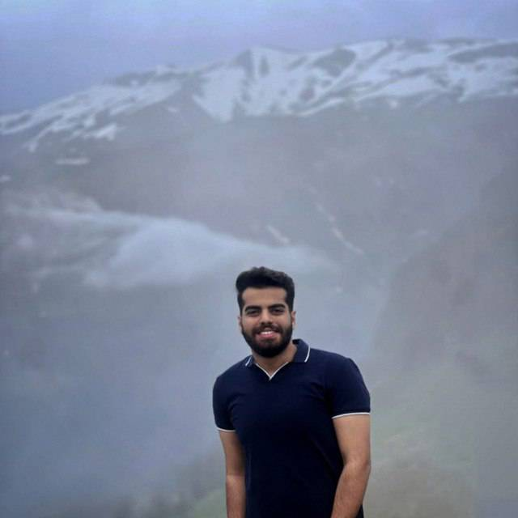
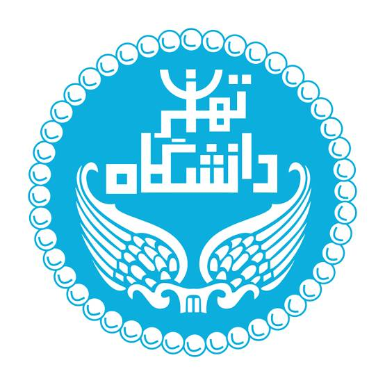

کارشناس تولید | متخصص هوش مصنوعی، اتوماسیون و توسعه راهکارهای AI
سلام! من علی موسیزاده هستم، فارغالتحصیل مهندسی شیمی از دانشگاه تهران و در حال حاضر دانشجوی کارشناسی ارشد مهندسی مکانیک (گرایش تبدیل انرژی) در همین دانشگاه. در کنار پیشینهی کاریام در حوزهی تولید و کنترل کیفیت دارویی، طی مدت اخیر با علاقه و پشتکار زیاد وارد حوزهی هوش مصنوعی، اتوماسیون فرآیندها و توسعهی راهکارهای AI شدهام و بهصورت عملی روی طراحی و پیادهسازی دستیارها و Agentهای هوشمند، اتوماسیون Workflow با ابزارهایی مثل n8n، و توسعهی وبسایت و اپلیکیشن با کمک ابزارهای هوش مصنوعی مثل Claude Code کار کردهام. هدفم ادامهی مسیر حرفهای در همین حوزه و کمک به کسبوکارها برای پیادهسازی راهکارهای هوشمند و اتوماسیون است.
آشنایی و تجربهی عملی در طراحی و پیادهسازی راهکارهای مبتنی بر هوش مصنوعی، اتوماسیون فرآیندهای کسبوکار و ساخت دستیارها و Agentهای هوشمند. دانش کاربردی در زمینه مدلهای زبانی بزرگ (LLM)، مهندسی پرامپت، طراحی Workflow و اتصال سرویسها از طریق API.
اجرای کامل عملیات دستگاه پد الکلی، بستهبندی محصولات دارویی با رعایت استانداردهای GMP، GLP، GSP، کنترل کیفیت نهایی (QC) و عملیات تاییدیه (OC).
۱۴۰۴/۰۲ - ۱۴۰۵/۰۲برگزاری کلاسهای خصوصی و گروهی برای آمادگی امتحان نهایی و کنکور، بهعنوان دبیر شیمی.
۱۴۰۵/۰۲ - اکنونمجموعهای از نمونه پروژهها و نمونهکارهای طراحی اتوماسیون و چتباتهای مختلف، همچنین طراحی سایت با ابزارهایی مثل n8n، Claude Code و GitHub.
۱۴۰۵/۰۴ - ۱۴۰۵/۰۵پروژه دانشجویی در زمینه تصفیه روغن موتور مستعمل و استفادهشده شرکت روغن بهران.
۱۴۰۲/۰۸ - ۱۴۰۲/۱۱